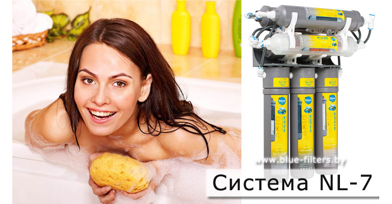

В какой-то момент перед каждым человеком встает вопрос – «полезно ли пить водопроводную воду?».
Ответ, конечно, отрицательный. Следующим шагом обычно становится выбор водяного фильтра или системы очистки воды. Вариантов на современном рынке предостаточно: стационарный или маленький фильтр? Какого типа действия? Какой фирмы? Чтобы разобраться в этих вопросах, нужно знать следующие моменты.
Расход воды.
В среднем один человек потребляет около трех литров жидкости в день. Это вода, супы и прочие блюда, чай. То есть в месяц одному человеку требуется примерно сто литров воды.
 Ассортимент рынка.На рынке самыми популярными являются:
- фильтр типа «кувшин». Он удобен для семьи из двух человек, или для специальных нужд (питьевая вода, вода для ребенка). Одного картриджа хватает на объем до 300 литров, а значит, вам не потребуется частая замена;
- насадка для крана. Это фильтр, который работает по тому же принципу, что и «кувшин», но при этом реже требуют замены картриджа;
- система фильтров настольная. Ее картриджи способны очистить около 1500 литров, и систему можно при необходимости включать и выключать. Это довольно удобно для среднестатистической семьи из 4 человек;
- система очистки воды из двух и более корпусов. Это уже стационарная очищающая система, и она дает множество преимуществ. Вода проходит несколько степеней очистки, скорость фильтрации довольно велика, ресурс картриджей гораздо больше, а главное, она выводится на отдельный кран. А значит, не надо отключать и подключать ее каждый раз, когда требуется чистая вода. Финансовая выгода тоже присутствует, так что первоначальные большие расходы довольно быстро окупаются;
- современная система, основанная на базе осмоса и ультрафильтров. Этими фильтрами пользуются заводы по производству бутилированной воды. Они очищают воду от любых загрязнений на 99%, и, приобретая такой фильтр, вы получите скорость потока такую же, какую имеет водопровод.
Ещё несколько тонкостей.
Любой фильтр очищает воду от хлора, даже самый простой. А хлор является самым вредным веществом в водопроводной воде.
Если в вашем водопроводе течет очень жесткая вода (с большим количеством солей), то фильтр должен обладать смягчающими свойствами. Узнать жесткость вашей воды можно, осмотрев стенки чайника. Чем толще слой накипи, тем выше этот показатель.
Если стоялая вода в течение нескольких дней даст зеленый осадок на стенках, то ваш фильтр должен содержать добавки бактерицидов или серебра.
Рекомендация.
Регулярное обслуживание фильтра для очистки воды в указанные для него сроки - главное условие для получения качественной воды на долгие годы.
Приятный бонус - компания ООО "Блюфильтерс" все лето оказывает услугу по анализу воды у Вас дома - бесплатно.
Телефоны для консультации, заказа фильтра или станции водоподготовки, выезда специалистов на дом для анализа качества питьевой воды: